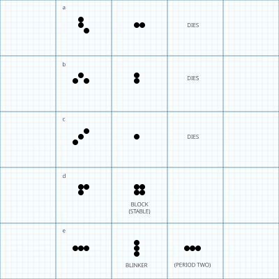
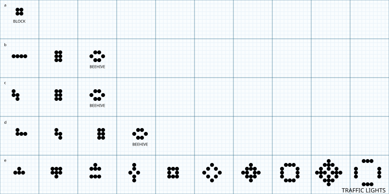
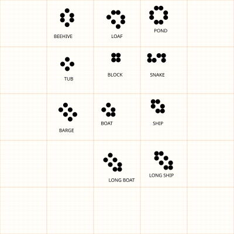

The fantastic combinations of John Conway's new solitaire game “life”
Most of the work of John Horton Conway, a mathematician at Gonville and Caius College of the University of Cambridge has been in pure mathematics. For instance, in 1967 he discovered a new group—some call it “Conway's constellation”—that includes all but two of the then known sporadic groups. (They are called “sporadic” because they fail to fit any classification scheme.) It is a breakthrough that has had exciting repercussions in both group theory and number theory. It ties in closely with an earlier discovery by John Conway of an extremely dense packing of unit spheres in a space of 24 dimensions where each sphere touches 196,560 others. As Conway has remarked, “There is a lot of room up there.”
In addition to such serious work Conway also enjoys recreational mathematics. Although he is highly productive in this field, he seldom publishes his discoveries. One exception was his paper on “Mrs. Perkin's Quilt,” a dissection problem discussed in “Mathematical Games” for September, 1966. My topic for July, 1967, was sprouts, a topological pencil–and–paper game invented by Conway and M. S. Paterson. Conway has been mentioned here several other times.
This month we consider Conway's latest brainchild, a fantastic solitaire pastime he calls “life”. Because of its analogies with the rise, fall and alternations of a society of living organisms, it belongs to a growing class of what are called “simulation games”—games that resemble real–life processes. To play life you must have a fairly large checkerboard and a plentiful supply of flat counters of two colors. (Small checkers or poker chips do nicely.) An Oriental “go” board can be used if you can find flat counters that are small enough to fit within its cells. (Go stones are unusable because they are not flat.) It is possible to work with pencil and graph paper but it is much easier, particularly for beginners, to use counters and a board.
The basic idea is to start with a simple configuration of counters (organisms), one to a cell, then observe how it changes as you apply Conway's “genetic laws” for births, deaths, and survivals. Conway chose his rules carefully, after a long period of experimentation, to meet three desiderata:
- There should be no initial pattern for which there is a simple proof that the population can grow without limit.
- There should be initial patterns that apparently do grow without limit.
- There should be simple initial patterns that grow and change for a considerable period of time before coming to end in three possible ways: fading away completely (from overcrowding or becoming too sparse), settling into a stable configuration that remains unchanged thereafter, or entering an oscillating phase in which they repeat an endless cycle of two or more periods.
In brief, the rules should be such as to make the behavior of the population unpredictable.
Conways genetic laws are delightfully simple. First note that each cell of the checkerboard (assumed to be an infinite plane) has eight neighboring cells, four adjacent orthogonally, four adjacent diagonally. The rules are:
- Survivals. Every counter with two or three neighboring counters survives for the next generation.
- Deaths. Each counter with four or more neighbors dies (is removed) from overpopulation. Every counter with one neighbor or none dies from isolation.
- Births. Each empty cell adjacent to exactly three neighbors—no more, no fewer—is a birth cell. A counter is placed on it at the next move.



It is important to understand that all births and deaths occur simultaneously. Together they constitute a single generation or, as we shall call it, a “move” in the complete “life history” of the initial configuration. Conway recommends the following procedure for making the moves:
- Start with a pattern consisting of black counters.
- Locate all counters that will die. Identify them by putting a black counter on top of each.
- Locate all vacant cells where births will occur. Put a white counter on each birth cell.
- After the pattern has been checked and double–checked to make sure no mistakes have been made, remove all the dead counters (piles of two) and replace all newborn white organisms with black counters.
You will now have the first generation in the life history of your initial pattern. The same procedure is repeated to produce subsequent generations. It should be clear why counters of two colors are needed. Because births and deaths occur simultaneously, newborn counters play no role in causing other deaths and births. It is essential, therefore, to be able to distinguish them from live counters of the previous generation while you check the pattern to make sure no errors have been made. Mistakes are very easy to make, particularly when first playing the game. After playing it for a while you will gradually make fewer mistakes, but even experienced players must exercise great care in checking every new generation before removing the dead counters and replacing newborn white counters with black.
You will find the population constantly undergoing unusual, sometimes beautiful and always unexpected change. In a few cases the society eventually dies out (all counters vanishing), although this may not happen until after a great many generations. Most starting patterns either reach stable figures—Conway calls them “still lifes“—that cannot change or patterns that oscillate forever. Patterns with no initial symmetry tend to become symmetrical. Once this happens the symmetry cannot be lost, although it may increase in richness.
Conway conjectures that no pattern can grow without limit. Put another way, any configuration with a finite number of counters cannot grow beyond a finite upper limit to the number of counters on the field. This is probably the deepest and most difficult question posed by the game. Conway has offered a prize of $50 to the first person who can prove or disprove the conjecture before the end of the year. One way to disprove it would be to discover patterns that keep adding counters to the field: a “gun” (a configuration that repeatedly shoots out moving objects such as the “glider,” to be explained below) or a “puffer train” (a configuration that moves but leaves behind a trail of “smoke”). I shall forward all proofs to Conway, who will act as the final arbiter of the contest.
Let us see what happens to a variety of simple patterns.
A single organism or any pair of counters, wherever placed, will obviously vanish on the first move.
A beginning pattern of three counters also dies immediately unless at least one counter has two neighbors. The illustration on the opposite page shows the five triplets that do not fade on the first move. (Their orientation is of course irrelevant.) The first three [a, b, c] vanish on the second move. In connection with c it is worth noting that a single diagonal chain of counters, however long, loses its end counters on each move until the chain finally disappears. The speed a chess king moves in any direction is called by Conway (for reasons to be made clear later) the “speed of light.” We say, therefore, that a diagonal chain decays at each end with the speed of light.
Pattern d becomes a stable “block” (two–by–two square) on the second move. Pattern e is the simplest of what are called “flip–flops” (oscillating figures of period 2). It alternates between horizontal and vertical rows of three. Conway calls it a “blinker“.
The illustration above shows the life histories of the five tetrominoes (four rookwise–connected counters). The square [a] is, as we have seen, a still–life figure. Tetrominoes b and c reach a stable figure, called a “beehive,” on the second move. Beehives are frequently produced patterns. Tetromino d becomes a beehive on the third move. Tetromino e is the most interesting of the lot. After nine moves it becomes four isolated blinkers, a flip–flop called “traffic lights.” It too is a common configuration. The illustration above shows the 12 commonest forms of still life.
The reader may enjoy experimenting with the 12 pentominoes (all patterns of five rookwise–connected counters) to see what happens to each. He will find that six vanish before the fifth move, two quickly reach a stable pattern of seven counters and three in a short time become traffic lights. The only pentomino that does not end quickly (by vanishing, becoming stable or oscillating) is the R pentomino [“a” in the illustration at the bottom of this page]. Its fate is not yet known. Conway has tracked it for 460 moves. By then it has thrown off a number of gliders. Conway remarks: “It has left a lot of miscellaneous junk stagnating around, and has only a few small active regions, so it is not at all obvious that it will continue indefinitely. After 48 moves it has become a figure of seven counters on the left and two symmetric regions on the right which, if undisturbed, would grow into a honey farm (four beehives) and traffic lights. However, the honey farm gets eaten into pretty quickly and the four blinkers forming the traffic lights disappear one by one into the rest of a rather blotchy population.”
For long–lived populations such as this one Conway sometimes uses a PDP–7 computer with a screen on which he can observe the changes. The program was written by M. J. T. Guy and S. R. Bourne. Without its help some discoveries about the game would have been difficult to make.
As easy exercises to be answered next month the reader is invited to discover the fate of the Latin cross [“b” in the illustration at the bottom of this page], the swastika [c], the letter H [d], the beacon [e], the clock [f], the toad [g] and the pinwheel [h]. The last three figures were discovered by Simon Norton. If the center counter of the H is moved up one cell to make an arch (Conway calls it “pi”), the change is unexpectedly drastic. The H quickly ends but pi has a long history. Not until after 173 moves has it settled down to five blinkers, six blocks and two ponds. Conway also has tracked the life histories of all the hexominoes, and all but seven of the heptominoes.
One of the most remarkable of Conway's discoveries is the five–counter glider shown in the top illustration on the opposite page. After two moves it has shifted slightly and been reflected in a diagonal line. Geometers call this a “glide reflection”; hence the figure's name. After two more moves the glider has righted itself and moved one cell diagonally down and to the right from its initial position. We mentioned above that the speed of a chess king is called the speed of light. Conway chose the phrase because it is the highest speed at which any kind of movement can occur on the board. No pattern can replicate itself rapidly enough to move at such speed. Conway has proved that the maximum speed diagonally is a fourth the speed of light. Since the glider replicates itself in the same orientation after four moves, and has traveled one cell diagonally, one says that it glides across the field at a fourth the speed of light.
Movement of a finite figure horizontally or vertically into empty space, Conway has also shown, cannot exceed half the speed of light. Can any reader find a relatively simple figure that travels at such a speed? Remember, the speed is obtained by dividing the number of moves required to replicate a figure by the number of cells it has shifted. If a figure replicates in four moves in the same orientation after traveling two unit squares horizontally or vertically, its speed will be half that of light. I shall report later on any discoveries by readers of any figures that crawl across the board in any direction at any speed, however slow. Figures that move in this way are extremely hard to find. Conway knows of only four, including the glider, which he calls “spaceships” (the glider is a “featherweight spaceship”; the others have more counters). He has asked me to keep the three heavier spaceships secret as a challenge to readers. Readers are also urged to search for periodic figures other than the ones given here.
The bottom illustration on this page depicts three beautiful discoveries by Conway and his collaborators. The stable honey farm [“a” in the illustration] results after 14 moves from a horizontal row of seven counters. Since a five–by–five block in one move produces the fourth generation of this life history, it becomes a honey farm after 11 moves. The “figure 8” [b], an oscillator found by Norton, both resembles an 8 and has a period of 8. The form c, called “pulsar CP 48–56–72,” is an oscillator with a life cycle of period 3. The state shown here has 48 counters, state two has 56 and state 3 has 72, after which the pulsar returns to 48 again. It is generated in 32 moves by a heptomino consisting of a horizontal row of five counters with one counter directly below each end counter of the row.
Conway has tracked the life histories of a row of counters through . We have already disclosed what happens through . Five counters reult in traffic lights, six fade away, seven produce the honey farm, eight end with four blinkers and four blocks, nine produce two sets of traffic lights, and 10 lead to the “pentadecathlon,” with a life cycle of period 15. Eleven counters produce two blinkers, 12 end with two beehives, 13 with two blinkers, 14 and 15 vanish, 16 give “big traffic lights” (eight blinkers), 17 end with four blocks, 18 and 19 fade away and 20 generate two blocks.
Rows consisting of sets of five counters, an empty cell separating adjacent sets, have also been tracked by Conway. The 5–5 rwo generates the pulsar CP 48–56–72 in 21 moves, 5–5–5 ends with four blocks, 5–5–5–5 ends with four honey farms and four blinkers, 5–5–5–5–5 terminates with a “spectacular display of eight gliders and eight blinkers. Then the gliders crash in pairs to become eight blocks.” The form 5–5–5–5–5–5 ends with four blinkers, and 5–5–5–5–5–5–5, Conway remarks, “is marvelous to sit watching on the computer screen.” He has yet to track it to its ultimate destiny, however.